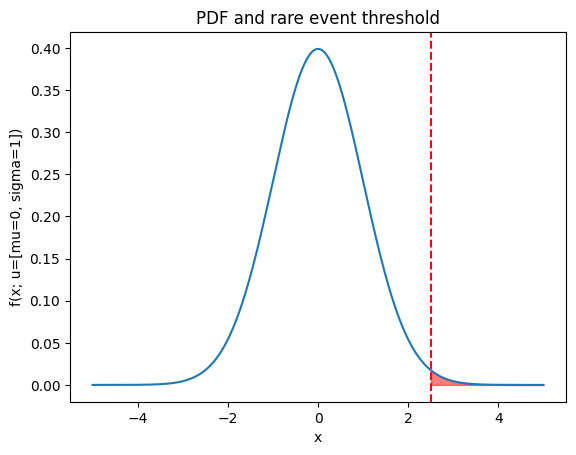
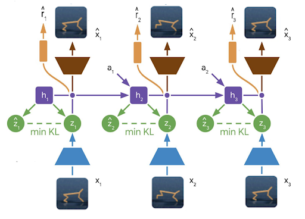
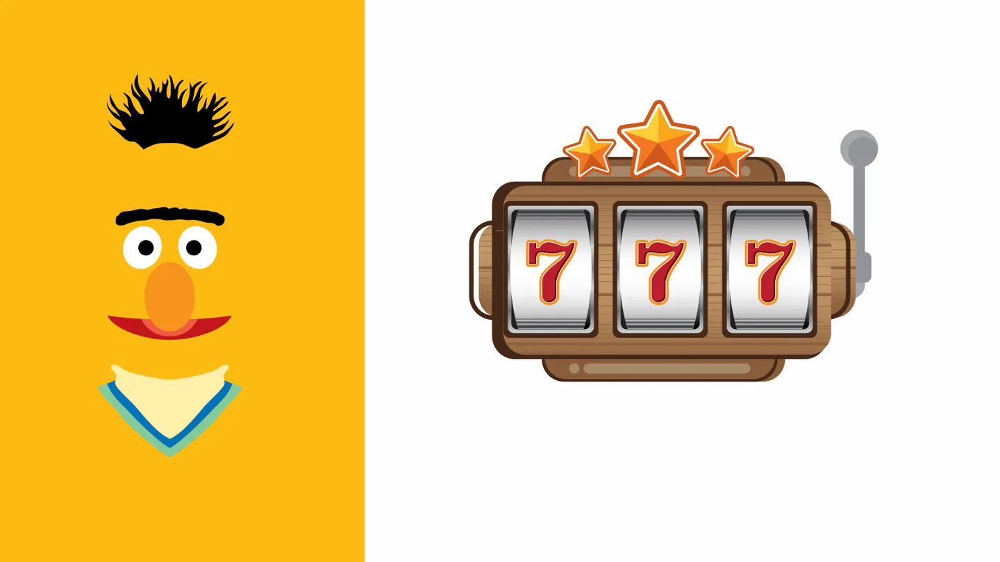
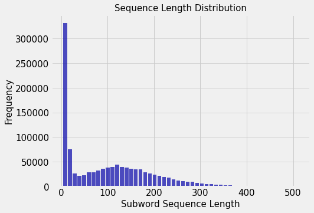

λf.(λg.f (g g)) (λg.f (g g))
Sai
About
Dao of Sai
🤖 = 42

A Guide to the Cross Entropy Method (CEM)
A deep dive into the math with code examples for the Cross Entropy Method (CEM).
Mar 23, 2024

Augmented Dreams: Data Augmentation & Self-supervised learning with Model-Based Reinforcement Learning
Improving sample efficiency of Model-Based Reinforcement learning with data augmentation and SSL.
Oct 23, 2022
Sai Prasanna, Karim Farid, Diego Fernandez

When BERT plays the lottery, All Tickets are winning!
My first major conference paper and change in research journey towards robotics!
Jan 8, 2022

Efficient Dynamic Batching of Large Datasets with Infinibatch
Learn how to efficiently batch large datasets with varied sequence length for training using
infinibatch
.
Sep 13, 2020
Roam Research - Software for building a Second Brain
Roam Research is a revolutionary note-taking/knowledge management software. It is designed with the idea that data structure for a second brain should be associative…
Mar 25, 2020
Neural Module Networks
Research Paper - https://arxiv.org/abs/1511.02799
Mar 2, 2020
ACL 2019 Conference Summary
My colleague Ananda and I attended ACL 2019 conference at the enchanting city of Florence. All the accepted papers can be accessed here. Here’s the summary of interesting…
Feb 10, 2020
Semantic Legion
I am guilty of spamming people in the degree one of my network with too many links in topics that fancy the Legion of varied interests that haunt me. Following the…
Dec 8, 2019
SemEval 2019 - Semi-Supervised Domain Adaptation for Suggestion mining
SemEval Workshop regularly has been conducting tasks in NLP to evaluate the progress in the field.
Apr 7, 2019
God’s own Programming Language
Found this interesting blog post explores why many programmers hold a high regard for an ancient programming language which you might not have heard about or use daily.
Apr 4, 2019
Learning Longer-term Dependencies in RNNs with Auxiliary Losses (ACL 2018)
Paper by Trieu H. Trinh, Andrew M. Dai, Minh-Thang Luong, Quoc V. Le
Jun 5, 2018
Neural Open Information Extraction (ACL 2018)
Paper by Lei Cui, Furu Wei, Ming Zhou
Jun 4, 2018
Dependency Injection - What, Why and How?
We are going to explore dependency injection with emphasis on swift iOS development. But the concept applies to most object oriented languages. We will also see some…
Mar 20, 2017
Manjaro Linux - My current daily driver arch based distro
The partition having arch in my secondary hard disk had died. The invisible grime which settles in your mind because of using non free windows and osX at home and work had…
Mar 17, 2017
Crashes are Optional! && Write Less, Do More
It was a boring tuesday/wednesday afternoon, co-worker Giridhar pinged me. He was the organizer for Swift India meetups. He invited me to give a talk. As I am in trying to…
Jan 29, 2017
Open for Collaboration, Closed for Disturbance
I have been working at open office environment for past 1 and a half years. The first office was a semi open one where workspaces had some degree of separation, not exactly…
Jan 6, 2017
Function Currying, Composition in Redux Middleware
I am new to functional programming paradigm, though I do understand something about closures ,pure functions and have used some programming structures related to functional…
Jul 10, 2016
Creation and Consumption
The amount of content available for consumption in our digital age is staggering. Movies, TV, video games, videos, blogs, emails, chat messages all compete for our limited…
Jul 10, 2016
Speed up iOS dev using XCode Injection Plugin
Injection for XCode.
Apr 17, 2016
MIT OCW 6.006 Algorithms Course
MIT OCW course is one among the best introductory algorithm courses online. It introduces techniques to analyse, and understand how algorithms work.
Apr 2, 2016
Blog using Github pages
Github.com allows us to upload just templates, config and theme for jekyll static blog generator, and it generates a static website for you.
Mar 23, 2016
No matching items